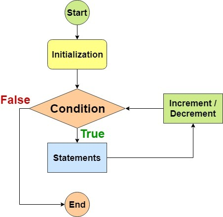
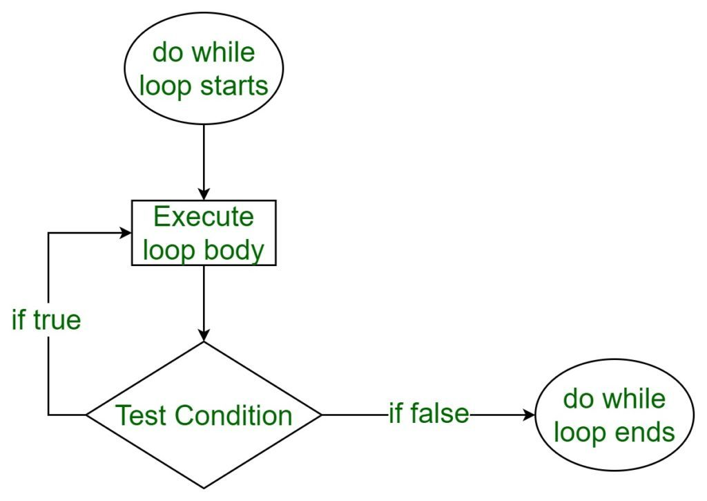
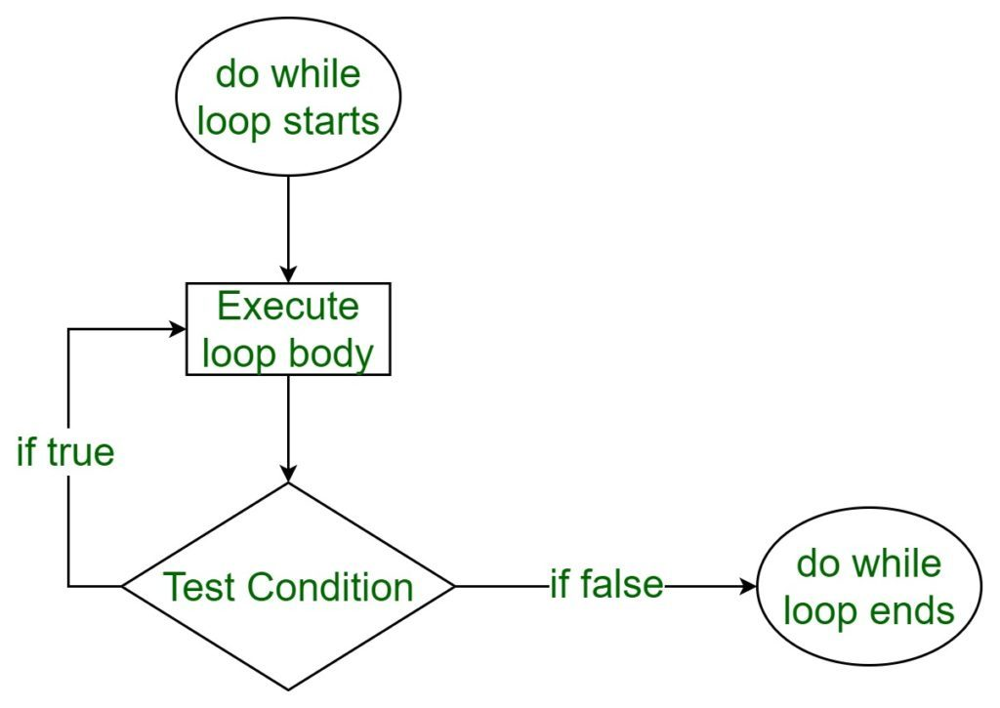

Loops are a quick and easy way to do something repeatedly. They repeat an action some number of times. A for loop repeats until a specified condition evaluates to false.
The following occurs when a for loop executes:JavaScript while statement creates a loop that executes a block of code as long as the test condition evaluates to true.
If the expression evaluates to true, the while statement executes the statement. If the expression evaluates to false, execution continues with the statement after the while loop.
The while loop evaluates the expression before each iteration, therefore, the while loop is known as a pretest loop.
The do-while loop statement creates a loop that executes a block of code until a test condition evaluates to false. The do-while loop always executes the body at least once before it evaluates the expression.
The most typical example of using the do-while loop is getting input from the user until the value provided is expected.
 
